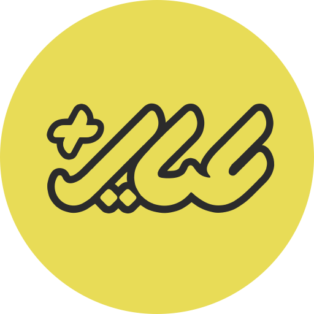

Ayar Plus
Part-time / Remote Contractor, outside Pazhoohan hours
Time period
Sep 2025 – Sep 2026
Remote from Iran; Kuwait market
Role: Part-time / Remote Technical Contractor
Project: Kuwait gold ERP
- Built the gold ERP client on .NET MAUI and .NET 10 so inventory, gold calculations, and accounting ran on a multilingual XAML screen against PHP.
- Kept invoices issuing when the shop network was down, with a local queue, send status, and last-write or server-version conflict handling. API v1/v2 let older clients, and an offline invoice, keep posting after a server update, and the Windows client discovered Android clients on the LAN.
- Shipped ShopSync into the shops so invoices kept issuing when the WAN was down. The MAUI client keeps no local database. An ASP.NET server on the LAN is the source of truth, and an outbox with idempotency keys syncs to Akaunting. Sold commercially to multiple shops. No license count.
- Published Android and iOS builds through CI/CD and Azure Pipelines so Google Play and App Store releases continued for live customers.
- Connected Kuwait shop card readers for Civil ID and stored the card photos on ImageKit for the Android app. A separate shop PC sat on the reader, and I debugged that PC remotely.
- Ran the remote weekly sprint, with daily and weekly meetings, across Mashhad, Qom, and the Product Owner for part of the contract.
- Opened the full cross-platform Bit Platform rewrite with a legacy data migration into the new system and PDF print for receipts and invoices. The rewrite moved to Blazor Hybrid on ASP.NET because the PHP backend was slow to integrate. The KaratFlow migration moved Akaunting (Laravel/PHP) into a redesigned schema. The hard part was KWD rounding and decimal precision.
- KaratFlow, in this same contract, keeps a dual ledger of 999 gold weight and KWD on invoices, purchases, and receipts, and PACI reads Civil ID on Windows. It is a parallel adjacent project. A related sync approach was reused there. The client design is not ShopSync.
- Tried the BahamShop RAG pilot on Ayar Plus product and document questions. Answers stayed in a review table and off the invoice path.

Tools & Technologies: .NET 10, .NET MAUI, XAML, ShopSync, Bit Platform, Blazor, ASP.NET Core, PHP, Akaunting, PostgreSQL, Redis, SignalR, Hangfire, QuestPDF, EF Core, CI/CD, Azure Pipelines, ImageKit